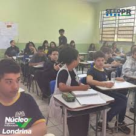
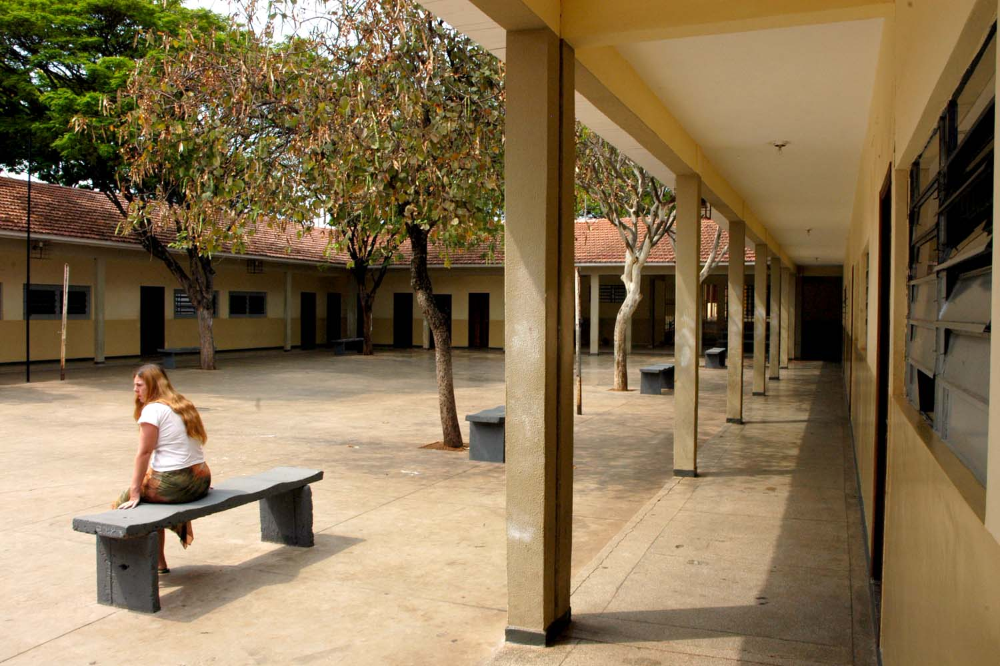
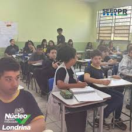
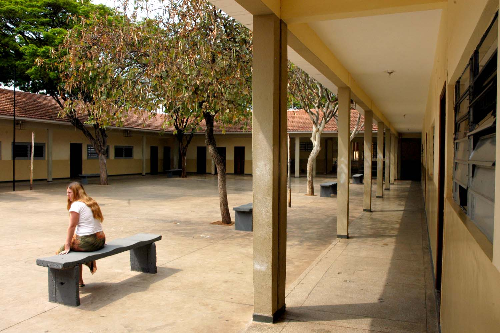
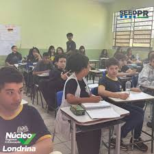
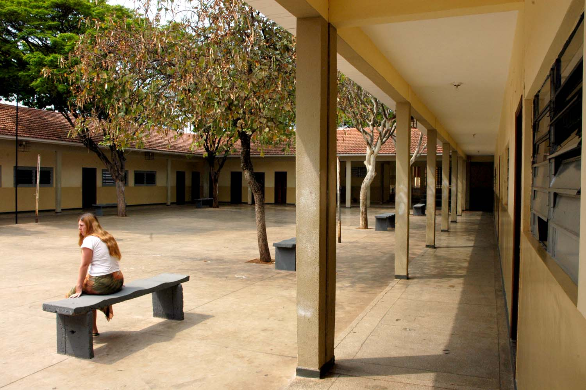

Galeria de Fotos


.jpg) 



O Colégio Estadual Professora Lúcia Barros Lisboa, localizado na Rua José Maria Pereira, 78, no Conjunto Vivi Xavier, em Londrina, Paraná, é uma instituição pública de ensino que oferece educação nos níveis fundamental (anos finais) e médio.
Em 2012, sob a gestão do diretor Claudio Henrique de Almeida, a escola cresceu significativamente, passando de aproximadamente 670 alunos para mais de 2.600 alunos distribuídos em cinco períodos.
Entre setembro e novembro de 2012, alunos do ensino médio participaram de uma Oficina de Imprensa coordenada pela professora de Filosofia e jornalista Sônia Lenira Nunes de Carvalho. O objetivo era introduzir os estudantes ao jornalismo, aprimorar habilidades de escrita e estimular o senso crítico.
Em março de 2019, o colégio sediou a exposição "130 anos de abolição da escravatura: o grito negro londrinense", do fotógrafo Marcos Costa. A mostra contou com mais de 100 fotos retratando momentos e personagens da comunidade negra de Londrina.
"A oficina me ajudou a superar a timidez e ampliar minha visão sobre a sociedade. Sempre tive interesse pelo jornalismo e vi na oficina uma oportunidade de me aperfeiçoar." - Milena Chagas Souza
"Aprendi a tirar fotos, criar melhores textos e desenvolver um olhar mais crítico sobre diversos assuntos." - Bárbara Hispagnol Moreira
"A oficina despertou meu interesse por leituras e me ajudou a ter mais ideias para escrever, especialmente na área de fotografia." - Geovana dos Santos Rodrigues
"A participação na oficina melhorou minhas habilidades de escrita, interpretação de textos e capacidade crítica. Atividades extracurriculares são fundamentais para novos aprendizados." - Luiz Guilherme


Endereço: Rua José Maria Pereira, 78, Londrina - PR
Telefone: (43) 3348-7786